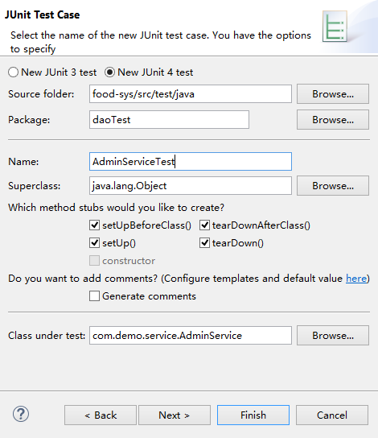
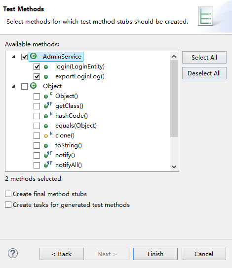
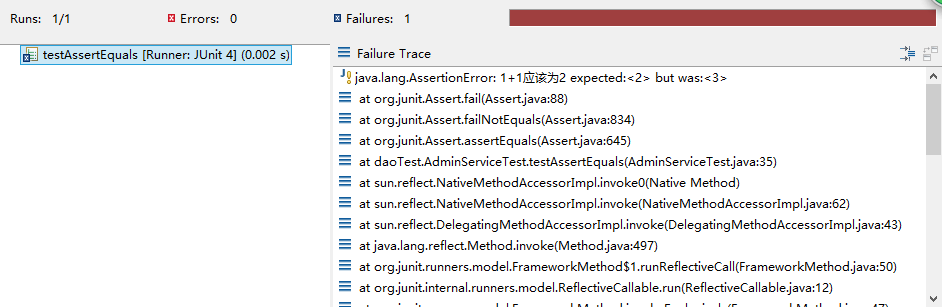
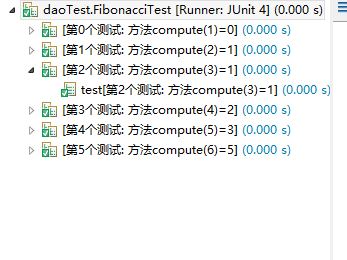
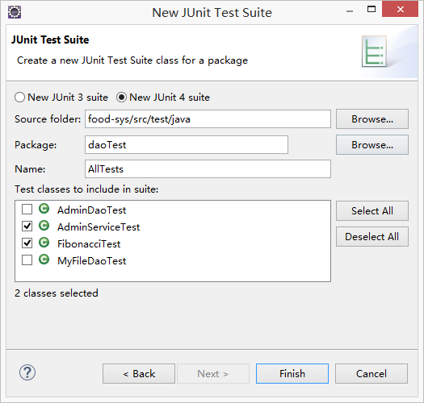
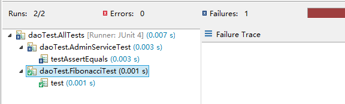

一直以来，使用junit的原因是可以单独运行方法，不用在写大量的main方法了，而且喜欢使用System.out来输出测试结果
直到最近读了一篇关于junit的文章才知道junit的强大之处以及自已使用上的错误….
正确建立Junit Test Case
以前就是直接建立一个类，然后写上一堆方法，在方法上加上@Test注解然后单独运行方法
正确的做法是使用Junit Test Case创建向导来创建
方法名为要测试的类名+Test
可以选择要自动创建的初始化和销毁方法和父类(一般用不到)
最主要的是选测要测试的类，Class under test，后面可以直接选择要测试的方法


生成的代码如下
public class AdminServiceTest {
@BeforeClass
public static void setUpBeforeClass() throws Exception {
}
@AfterClass
public static void tearDownAfterClass() throws Exception {
}
@Before
public void setUp() throws Exception {
}
@After
public void tearDown() throws Exception {
}
@Test
public void testLogin() {
fail("Not yet implemented");
}
@Test
public void testExportLoginLog() {
fail("Not yet implemented");
}
}
注解
常见的注解如下
方法的执行顺序为,假设有两个@Test的测试用例
@BeforeClass –> @Before –> @Test –> @After –> @Before –> @Test –> @After –> @AfterClass
-
@Before 初始化方法
-
@After 释放资源
-
@Test 测试方法，在这里可以测试期望异常和超时时间
-
@Ignore 忽略的测试方法
-
@BeforeClass 针对所有测试，只执行一次，且必须为static void
-
@AfterClass 针对所有测试，只执行一次，且必须为static void
-
@RunWith 指定测试类使用某个运行器
-
@Parameters 指定测试类的测试数据集合
-
@Rule 允许灵活添加或重新定义测试类中的每个测试方法的行为
-
@FixMethodOrder 指定测试方法的执行顺序
断言
断言是编写测试用例的核心实现方式，即期望值是多少，测试的结果是多少，以此来判断测试是否通过
注意下面的断言方法有多种重载方式，使用时多读一下api
-
assertArrayEquals(expecteds, actuals) 查看两个数组是否相等
-
assertEquals(expected, actual) 查看两个对象是否相等。类似于字符串比较使用的equals()方法
-
assertNotEquals(first, second) 查看两个对象是否不相等。
-
assertNull(object) 查看对象是否为空。
-
assertNotNull(object) 查看对象是否不为空。
-
assertSame(expected, actual) 查看两个对象的引用是否相等。类似于使用“==”比较两个对象
-
assertNotSame(unexpected, actual) 查看两个对象的引用是否不相等。类似于使用“!=”比较两个对象
-
assertTrue(condition) 查看运行结果是否为true。
-
assertFalse(condition) 查看运行结果是否为false。
-
assertThat(actual, matcher) 查看实际值是否满足指定的条件
-
fail() 让测试失败
@Test
public void testAssertEquals() {
int a = 1 + 1;
a++;//假设这里改变了
// Assert.assertEquals(2, a);
Assert.assertEquals("1+1应该为2", 2, a);
}
测试肯定是未通过的，输出信息如下

高级使用
下面是一些具体案例
参数化测试
有时一个测试方法，不同的参数值会产生不同的结果
那么我们为了测试全面，会把多个参数值都写出来并一一断言测试
这样有时难免费时费力，这是我们便可以采用参数化测试来解决这个问题
参数化测试就好比把一个“输入值，期望值”的集合传入给测试方法，达到一次性测试的目的
比如要测试下面的斐波那契数列的正确性
class Fibonacci {
public static int compute(int index) {
if (index == 1) {
return 0;
} else if (index == 2 || index == 3) {
return 1;
} else {
return compute(index - 1) + compute(index - 2);
}
}
}
通常是这样写的
@Test
public void test() {
int[] expected = new int[] { 0, 1, 1, 2, 3, 5 };
for (int i = 0; i < expected.length; i++) {
assertEquals(expected[i], Fibonacci.compute(i + 1));
}
}
但是上面的测试实际上是一个测试，只能测试出第一次出错的地方，后面的就不再测试了，应该使用下面的方法
@RunWith(Parameterized.class)
public class FibonacciTest {
private int input;
private int expected;
@Parameters(name = "第{index}个测试: 方法compute({0})={1}")
public static Iterable<Object[]> data() {
return Arrays.asList(new Object[][] { { 1, 0 }, { 2, 1 }, { 3, 1 }, { 4, 2 }, { 5, 3 }, { 6, 5 } });
}
public FibonacciTest(int input, int expected) {
this.input = input;
this.expected = expected;
}
@Test
public void test() {
assertEquals(expected, Fibonacci.compute(input));
}
}

打包测试
如果一个项目中有很多个测试用例，如果一个个测试也很麻烦，因此打包测试就是一次性测试完成包中含有的所有测试用例

@RunWith(Suite.class)
@SuiteClasses({ AdminServiceTest.class, FibonacciTest.class })
public class AllTests {
//这里什么都不用写
}
结果如下

异常测试
异常测试与普通断言测试不同，共有三种方法
-
第一种
//出现指定异常才会通过测试，指定异常的父类也会通过 @Test(expected=ArithmeticException.class) public void test(){ int a = 1/0; } -
第二种
@Test public void test() { try { int a = 1 / 0; Assert.fail("没有出现ArithmeticException异常"); } catch (Exception e) { Assert.assertEquals("/ by zero", e.getMessage()); } } -
第三种
@Rule public ExpectedException thrown = ExpectedException.none(); @Test public void test() throws ArithmeticException{ // 出错之前添加期望 thrown.expect(ArithmeticException.class); //可以设置预期异常的属性信息 thrown.expectMessage("/ by zero"); int a = 1/0; }
限时测试
有时为了防止出现死循环或者方法执行过长（或检查方法效率），而需要使用到限时测试。顾名思义，就是超出设定时间即视为测试失败。共有两种写法
@Test(timeout=1000)
public void testWithTimeout() {
...
}
//应用于每个方法,而不是总时间
@Rule
public Timeout globalTimeout = new Timeout(2000);
@Test
public void test1() {
try {
Thread.sleep(2500);
} catch (InterruptedException e) {
e.printStackTrace();
}
}
@Test
public void test2() {
}
测试Spring
主要是测试dao层，可以不频繁的启动服务器代码如下，不难理解
@RunWith(SpringJUnit4ClassRunner.class)
@ContextConfiguration(locations = { "classpath:spring-mvc-test.xml" })
public class TypeMapperTest {
@Resource
private TypeMapper typeDao;
@Test
public void findByName() {
Type type = typeDao.findByName("默认分类");
Assert.assertEquals(1, type.getId());
}
}
使用事务，避免对开发现场造成影响
@TransactionConfiguration(transactionManager=”transactionManager”)读取Spring配置文件中名为transactionManager的事务配置，defaultRollback为事务回滚默认设置。
@Transactional开启事务。可放到类或方法上，类上作用于所有方法。
@Rollback事务回滚配置。只能放到方法上。
@RunWith(SpringJUnit4ClassRunner.class)
@ContextConfiguration(locations = {"classpath:spring-mvc-test.xml" })
@Transactional
@TransactionConfiguration(transactionManager = "transactionManager")
public class UserServiceTest {
@Resource
private IUserService userService;
@Test
@Rollback(false)
public void testAddOpinion2() {
userService.downloadCount(2);
System.out.println(2);
}
}
或者测试类继承AbstractTransactionalJUnit4SpringContextTests
此类解决了在web.xml中配置OpenSessionInview所解决的session生命周期延长的问题
同时类已经在类级别预先配置了好了事物支持，因此不必再配置@Transactional和@RunWith这两个注解
@TestExecutionListeners({TransactionalTestExecutionListener.class, SqlScriptsTestExecutionListener.class})
@Transactional
public abstract class AbstractTransactionalJUnit4SpringContextTests extends AbstractJUnit4SpringContextTests {
}
总结
-
测试不应该是简单的System.out，然后肉眼观察，因为这严重违背了自动测试的原则
-
真正的测试应该实现自动化，且不破坏开发现场
-
测试对大型项目显得至关重要